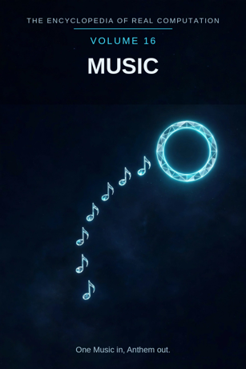

Chron.
The Encyclopedia of Real Computation

One Music in, Anthem out.
Home domain: Aesthetics
One Music in, Anthem out.
◉ A Principle .... Music ◎ B Purpose ...... Performance ◉·◉ A.A Alpha ...... the Musician ◉·◎ A.B Cross ...... the Groove △ X Primitive .... Sound ⚙ Y Protocol ..... Playing ⬢ Z Product ...... Song ◐ i State ........ Silence ⚖ j Condition .... Listening ⊞ N Set .......... Notes ◷ h Time ......... Tempo ▣ C Context ...... the Room ▦ D Domain ....... the World ♥ E Emotion ...... Joy ➤ F Intention .... Expression ↻ pi Cycle ........ the Chorus ➔ phi Step ......... the Beat ⚄ e Probability .. Improv • h-bar Planck ..... the Note
Σ sigma Summation .. the Album
◈ gamma Scale ...... Volume Δ delta Change ..... the Remix ⁂ sigma' Options ... Genres Ω Omega Answer ..... Anthem
Every volume of this encyclopedia does the same work. The Prologue figures the subject whole. Then come twenty-four chapters, one per term, each doing four jobs in plain English: what the term means, where it sits in the computation, how it works on the volume's one running example, and what breaks without it. Then the Data, whole. Then the Crossings. Then the Sum. The running example of this volume is one tune: eight notes, first hummed in a kitchen, followed to the night a crowd sings it back.
Music: sound organised in time, aimed at performance. Performance: music played to be heard - the playing in which the music is completed.
◉ Music. ◎ Performance = the root of Music: aimed at itself,
music asks to be played. ◉·◉ the Musician: music turned on itself becomes a person who plays it. ◉·◎ the Groove: music crossed with performance - what the crossing leaves in the body.
△ Sound = Music parted over the Notes. ⚙ Playing = the function
of the Sound, the working applied. ⬢ Song = Sound times Playing, the product. ◐ Silence = the root of negative Music: the rests, and everything not played. ⚖ Listening = the condition, element by element: music stands while it is listened to. ⊞ Notes = the set: the degrees the tune is counted in. ◷ Tempo: music comes down through time at a rate. ▣ the Room: where music stands.
▦ the World = the Notes crossed by the real side. ♥ Joy = the
difference a room makes. ➤ Expression = the intention that carries a context. ↻ the Chorus: music returns, and the return is the point. ➔ the Beat: one step, played, stood on. ⚄ Improv: the odds a passage carries when the player leaves the page.
• the Note: the least piece, one sound, addressed. Σ the Album:
all of a season's songs, summed as one. ◈ Volume: the scale a song is heard at. Δ the Remix: music's own measure of change.
⁂ Genres: the spread of manners a tune might take. Ω Anthem:
the answer music resolves into.
IF If Music to Performance, then Sound & Playing is Song, or Silence while Listening for Notes, through Tempo, in the Room, the World, Joy, Expression, at the Chorus by the Beat, with Improv over the Note - sum the Album, scale Volume, change the Remix, options Genres - therefore Anthem.
Stands below, after the chapters, figured whole: the Notes crossed by the Study, thirty-two cells; the domain matrix of the source figuring, melody, harmony, and rhythm crossed by stage, studio, and street; and the six contexts.
The seven laws, run on this seed. Pythagoras: Music squared plus Performance squared is the Room squared - the diagonal of this volume is the room a song fills corner to corner, and the triangle checks in the Where, the If, and the Data identically, which the figuring of this seed has passed outright. Law of cosines: the tilt between music and performance is set by context - in the kitchen the angle is close and forgiving, on the concert stage it opens to its full width. Binomial: the middle term is the Groove, two times over - the player sets it, the listener's body keeps it; the music lives in the cross term. AM-GM: Performance is the geometric mean between Music and the One. Log law: Volume of the Song is Volume of the Sound plus Volume of the Playing - size adds where work multiplies. Complex modulus: Silence is counted in the size of the music; a song is larger, not smaller, for its rests. Triangle inequality: no route from Sound to Song is shorter than Playing; skip it and you hold a score no one has heard, labelled as such in the last term but one.
Music begins with the plainest material there is after number - sound - and works it by playing into the one product that cannot be shelved: a song, which exists only while it is happening. The field is honest about its shadow: silence is not the absence of music but its state, counted in every song's size, since the rests are where the beat is felt and the pause before the last phrase is often the most musical moment in the tune. It is honest about its condition, too: music stands while listening, and its smallest piece is a single note from which every melody is addressed. Its history cycles by chorus - the part that comes back until the room owns it - and its spread is the genres, the named manners any tune may take when other hands cross it with other performances. And its finish is the anthem: not the song applauded, but the song carried - sung back by strangers who never met the maker, the purpose, through the product, arriving at the principle again. One Music in, Anthem out.
What it means. Music is sound organised in time, aimed at being heard: tones chosen, ordered, and spaced so that they mean more together than they do apart. It is the principle of this volume and the younger of the two sister arts in the Aesthetics home.
Where it sits. Music is the seed every other term grows from: Performance is its root, the Musician its self-product, the Groove its cross. Everything else in the volume is music distributed, worked, placed, or resolved.
How it works. The tune is music before it is ever played well. It begins as an order - eight notes hummed over a kettle, in the wrong order twice, then in the right one. The moment the order is chosen and meant to be heard again, the Principle is at work; the humming afterward is labour in its service.
What breaks without it. Without music as a principle, sound is only noise or signal - an alarm, a rumble, a warning. Every other field borrows music's time-sense: even the historian's narrative keeps a tempo. Remove the Principle and the sounds remain, unorganised.
What it means. Performance is what music is for: the playing, to be heard. A score is a promise; a performance is the promise kept, once, in a room, at a tempo, by particular hands. Music is the one field in this encyclopedia whose purpose is not a thing but an event.
Where it sits. Performance is the Purpose, B = the square root of A: music aimed at itself extracts the demand to be played, not just written. And B squared = A: a performance fully achieved settles back into music itself - the tune, perfectly played, is no longer a performance of the music; it is the music, and the purpose disappears into the principle.
How it works. The tune exists in order to be sung. On paper it is eight note-heads and a set of instructions to a stranger. In the kitchen, hummed while the kettle boils, it completes its figure for the first time - small, imperfect, and entirely real. Every later, grander performance is that completion at scale.
What breaks without it. Music without performance is a library of instructions for events that never occur. The purpose is the pull that drags sound across playing into song; cut it and the field is an archive of silent paper.
What it means. The musician is music embodied: a person in whom the field's standards have become reflexes - what counts as in tune, what is rushed, where the phrase wants to breathe. The same notes in different hands are a standard exhibit in every field of this encyclopedia; in music the difference is audible in four bars.
Where it sits. The Alpha, A times A: the field turned on itself. The musician is not music's employee but its self-product - music, practised long enough, produces the person who can practise it properly.
How it works. A beginner plays the tune note by note, correctly, each sound an errand. The musician plays the same eight notes as two phrases - a question and its answer - leaning on the third note, letting the seventh hang. Nothing in the set changed. The holder changed, and with the holder, the music's whole company: a thousand other tunes stand behind the second playing.
What breaks without it. Unowned music is scores nobody can bring to life and instruments in tune in empty rooms. Styles without musicians repeat themselves exactly; the field's memory lives in hands or nowhere.
What it means. The groove is the interaction term: music crossed with performance, the residue the crossing leaves in the body. The source proofs name it plainly - what the crossing of Music and Performance leaves in the body is the groove, and it is counted, beat by beat. It is the cross term of the binomial, felt in the feet.
Where it sits. The Cross, A times B, counted twice: the player crosses into the tune (music shaping performance), and the playing crosses back into the listeners (performance reshaping the music they carry away). Both directions are the same term.
How it works. Play the tune stiffly, every note on the grid, and it is correct and dead. Play it with the third beat laid slightly back - the pocket - and shoulders in the kitchen start moving before anyone decides to dance. That movement, theirs and unplanned, is the Groove: the one term in this volume the body verifies without consulting the mind.
What breaks without it. With either factor at zero - notes with no playing in them, or playing with no music in it - the product is zero and nothing moves. Performances everyone respects and nobody remembers are cross-term failures.
What it means. Sound is the primitive material: one tone at a time, pitched, timed, combinable. A sound makes no claim by itself; it is the clay of the field. Music parted over its Notes arrives first as sounds.
Where it sits. X = A times N: the Principle spread across the Set. Every corner of the field receives the principle as its own sounds - the singer as vowels held on pitch, the fiddler as string-stops, the machine as waveforms.
How it works. The tune is, materially, eight sounds in a row: up, up, across, down, up, across, down, home. Strip the melody away in your mind and the sounds remain, countable, each with a pitch and a length. Everything this volume claims is built from these and nothing else.
What breaks without it. No primitives, no products: a field with nothing elementary to work has only finished wonders, and wonders cannot be taught, transposed, or repaired.
What it means. Playing is what may be done to sounds: fingering, bowing, breathing, striking, in time and in tune. The protocol is public and teachable - scales, exercises, rehearsals - which is the point. A way of playing that cannot be handed on is not protocol but biography.
Where it sits. Y = f(X), with f the root of Performance: the working is governed by the purpose. Sounds are handled as they are because the handling carries toward being heard, not merely toward being correct.
How it works. The tune hummed, the tune on a fiddle, the tune on a piano are the same eight sounds proposed to three different workings - and they come back as three near-relatives, not one song: the hum breathes where the phrases breathe, the fiddle leans, the piano declares. Protocol is not packaging. It is half the product.
What breaks without it. Sound without playing stays potential: a tuned instrument in an empty room, a scale no one runs. Playing is the field's hands.
What it means. A song is sound worked by playing and carried across the Groove into a finished, portable thing: the field's load-bearing unit. A song can be carried in one head, taught in one minute, and recognised in two notes - which is what a product is for.
Where it sits. Z = X times Y: the product, area-shaped - it has extent exactly as far as its factors reach, and it can always be factored back for audit: which sounds, played how, in what order.
How it works. Sung once through, whole, the tune stops being an exercise and becomes a song - a thing with a name in the singer's household, requested by description ("the one that goes up-up-across"). The hours of wrong orders vanish into it. What remains can leave the kitchen.
What breaks without it. Playing that never sets into a product is practice, however lovely. The field is taught, traded, and remembered by its songs; exercises prepare songs the way studies prepare artworks in the volume before this one.
What it means. Silence is music's shadow: the rests, the held breath, the beat where nothing sounds. It is not the absence of music. It is the state the principle stands in - the root of negative Music - and by the modulus law it is counted in every song's size. A rest is written, counted silence; it is in the score, not outside it.
Where it sits. i = the root of negative A: the shadow of music itself. Every song carries its silence the way the model carries every shadow: inside the figure, measured, doing work.
How it works. The tune's best moment is a silence: the pause before the last phrase, where the room leans in. Take the pause out and the tune is merely complete. Leave it in and the tune has a heartbeat - because the beat is felt most precisely where the sound stops and the counting continues anyway.
What breaks without it. A field that hid its silence would produce the wall of sound: every instant filled, nothing phrased, the listener given no edge to hold. Naming the shadow is what lets the field trust its rests - and lets a rest be the loudest thing in the song.
What it means. Listening is the condition under which music stands: a song is fully music while it is listened to. This is not a snub to unheard music; it is the field's honesty about where its circuit closes. The condition is patrolled element by element - this song, this listener, this hearing.
Where it sits. j, the Condition: the root taken one element at a time. The grammar prints it plainly - Silence while Listening for Notes. The condition is granular: a tune half-heard over a washing machine is held to a different account than a tune heard in a quiet room with the door shut.
How it works. Played to an empty kitchen, the tune is music in storage - complete, and waiting. Sung to one person who stops washing up to hear the end of it, the condition is satisfied and the figure closes: sound, playing, groove, all live at once. The tune did not change. Its standing did.
What breaks without it. Without the listening condition, the field cannot distinguish a song from the vibrations of its own rehearsal in a sealed box - the materials are identical. Reception must be in the figure, or music's whole economy of rooms and audiences is a rumour the field tells itself.
What it means. The notes are music's divisions: the degrees out of which tunes are counted - the tonic and its relations, the scale's family. Each note is the whole principle read at one pitch: a sound with an address, a job, and a pull toward home.
Where it sits. N, the Set - the term everything is counted in: sound is A times N, the domain is N crossed by the real side, the sum runs over N. The set is complete as figured and open underneath; tuning systems are still argued over, and quarter tones wait at the border like unborn studies in the Art volume.
How it works. Eight notes carry the tune. Change one - flatten the third - and the same skeleton comes back wearing another feeling entirely, sunlight to shade. That is the set working: the elements are few, their relations are the music, and a single element's alteration is a controlled experiment the whole field can hear.
What breaks without it. Unsorted sound is a heap of pitch: everything audible, nothing findable, each generation re-humming what it cannot notate. The set is the promise that a tune can be written down, carried away, and found again by strangers.
What it means. Tempo is this volume's word for Time: the rate at which the figure moves through the hours. Music is the one field whose material is time itself, shaped - and tempo is the shaping stated as a number anyone can set a machine by.
Where it sits. h, Time: the passage the whole figure moves through, figured here as tempo, two pi times the Note. Other volumes carry their knowledge through the ages or the lifespan; this one carries its sound through the next four minutes, and the carrying is the content.
How it works. The tune at ninety beats a minute is a lullaby; at one hundred forty it is a dance; the notes are identical and the species has changed. Every musician who has been told "same again, but slower" knows the term is load-bearing: tempo is not the song's packaging but one of its dimensions.
What breaks without it. Music described without tempo is half described - pitch without gait. The score that omits it is an unfinished instruction, and the field's metronome, humble as it is, exists because this term cannot be left to taste.
What it means. The room is where music stands: its base context, the standing-place from which its domain is read. A room is not neutral. Its size, surfaces, and air are in every song played in it - the room is the last instrument, and the only one the player does not carry.
Where it sits. C, the Context, first of the setting terms: contexts transform the domain (the table stands in the Data), and the difference a context makes is measured by Joy, two chapters on.
How it works. The tune hummed in a tiled stairwell blooms - the walls hand every note back with interest. The same tune in a carpeted closet dies at the lips. Singers learn their rooms the way sailors learn harbours: the kitchen's echo is in the tune's final form, though no score will ever print it.
What breaks without it. Context-free music is a fiction of studios and anechoic chambers. Songs are played somewhere, and the somewhere is part of the song; a field that denied it could not explain why choirs are built like instruments, or why the bathroom singer is a universal figure.
What it means. The world is music's whole territory: the Notes crossed by the real side, everywhere the field can actually be met. The source figuring gives the domain a working face - melody, harmony, and rhythm crossed by stage, studio, and street, nine crossings, figured in the Data - inside the full crossing of the tune's notes by the Study, thirty-two cells.
Where it sits. D = N crossed by R: the set by the real side. A note becomes territory only when the world moves across it; the domain is a crossing, never a list.
How it works. The tune holds addresses, plural: Melody crossed with Street when it is busked on a corner, Melody crossed with Studio when it is cut for the album, the Tonic crossed with the Practice when a child drills it. Same notes, different crossings, different meetings with the world - and the territory holds all of them at once.
What breaks without it. Music without a domain is unplaceable: hummed once, praised in a sentence, and lost. The domain is the field's answer to the question every song asks on finishing: where in the world do I live?
What it means. Joy is the difference a room makes, measured as this field measures it: the change between the context the music left and the context it landed in. Music's emotion term is not the performer's mood; it is the delta of the whole event, and this field names it without embarrassment, because everyone who has heard a room change knows it is real and sized.
Where it sits. E, Emotion: the difference between contexts, C1 minus C0. Before the performance, the tune's power is a rehearsal rumour; after it, the room has changed - and the size of the change is this term.
How it works. The tune at a wedding, sung by people who have known the couple for decades, and the same tune at Tuesday practice: identical notes, identical playing, nearly. The E differs by a roomful of joy, and the difference is not in the song - it is between the contexts, which is exactly where this term lives and the only place it could.
What breaks without it. Without an emotion term, every performance reads equal in the field's books, and no one can say why one night sang and another merely happened. Joy is data; the field that refuses to record it is choosing to know less.
What it means. Expression is the push: the aim that carries a run-through across into a performance. In this field the intention is specific - F points at B, at Performance itself. What survives the carrying is the song; what is shed is the song's privacy, its status as the player's own property.
Where it sits. F, Intention: the operator that carries contexts - C1 = C0 + F. The old context plus the aim becomes the new context: the room, aimed at performance by expression, becomes the room the world will hear about.
How it works. In the tune's third phrase the player leans in - a fraction more weight, the note held a breath longer than the metronome allows. Nothing in the set changed; that lean is F, the intention made audible, and it is the difference between the tune being played and the tune being said. Audiences cannot define it and never miss it.
What breaks without it. Without expression, playing is typing: accurate sound at correct times, delivered by nobody in particular. The field's whole distinction between a performance and a playback lives in this term.
What it means. The chorus is music's cycle: the part that comes back. Music's gait at every scale is return - the chorus in the song, the season in the touring year, the old standard revived by each generation one level up. The chorus is not repetition; it is the mechanism by which a tune becomes common property.
Where it sits. pi, the Cycle: the loop the figure runs, turning by beats. It is also the field's memory policy - a song is kept the way a tradition is kept, by being re-sung on a cycle; the chorus is the part engineered to survive the keeping.
How it works. The tune's refrain comes back three times. The first time, the room listens. The second, the room hums. The third, the room sings it - owns it - and the tune's composer has become, for four bars, unnecessary. That transfer of ownership is the cycle completing, and it is the entire technology by which music outlives its makers.
What breaks without it. Music without return is a corridor: everything heard once, nothing owned, anthems impossible. The field would be a stream of novelties with no common stock - and no way to hand anything on except by writing it down and hoping.
What it means. A beat is one step: a single pulse, struck or implied, that the song now stands on. Music climbs by beats the way a proof climbs by lemmas - the step is a property of the climbing, not of the mountain. Nobody plays the whole song at once; the beat is the size of "at once" in this field.
Where it sits. phi, the Step: the advance at the cycle's turn - the next context minus the now. In the grammar the cycle turns by the step: at the Chorus by the Beat. Too fine and the song drowns in counting; too coarse and the groove cannot be followed, and an unfollowable step is a stumble, not a step.
How it works. One beat decides the tune: the dropped beat before the final chorus, where the band stops and the room's clapping hangs alone for exactly one pulse too long. Before it, a good song; after it, the moment everyone will describe on the way home. The cleverness of the performance is stored in a handful of such beats so the rest can be plain.
What breaks without it. Songs described only as finished wholes cannot be taught: "just feel it" is not a curriculum. The beat is how the field hands its skill to strangers, one pulse at a time.
What it means. Improv is the odds a passage carries: what may happen when the player leaves the page. It is this volume's probability term, and the field keeps it honestly - the written music sets the chances, the night rolls them. Some nights gold; never guaranteed; and the odds are part of the ticket.
Where it sits. e, Probability: with Improv over the Note - every point of a performance carries its odds printed beside it, if you know how to listen. The tune's open middle is e at its widest: the set of things that could happen there is the spread the next part of the figure will weigh.
How it works. In the tune's open eight bars the player invents - finds a run that was in no rehearsal, built from the scale, the room, and nerve. It works because the odds were loaded for years: ten thousand practised notes stand behind the eight improvised ones. Improv is not the opposite of preparation; it is preparation, spent at chance's counter.
What breaks without it. Without a probability term, music is playback: the recording always lands, and the field cannot explain why anyone leaves the house to hear a tune they own. The live risk that makes performance Performance lives here.
What it means. The note is the least piece of music: one sound, pitched and timed, the atomic unit the field's sums are taken over. Not the shortest sound a player can make, but the smallest unit of address - a melody is a list of these, and everything larger is built by their arrangement.
Where it sits. h-bar, the Planck term: the smallest resolution of the figure, figured here from Tempo - time divided down to its quantum, one note. Omega's limit is taken as the least piece shrinks: music's total is defined over notes, and parts of notes, all the way down.
How it works. The tune's first note does more than start the melody; it addresses everything after it. It declares the tonic, the key, the world the other seven notes will live in - the whole tune is locatable from that one least piece, the way a city is locatable from its first surveyed stone. Every anthem was once eight notes; every note was once the only one.
What breaks without it. No note, no address: melody dissolves into gesture, teaching becomes humming at students, and the grid of every volume in this encyclopedia loses the smallest thing it exists to place.
What it means. The album is music summed: a season's songs read as one body, with an arc - the single, the deep cut, the closer. The source figuring prints it plainly: the set summed reads +1, one album; the tally counts the tracks. A result anywhere on the record must cohere everywhere; the dud is everyone's emergency by morning.
Where it sits. sigma, Summation: the total taken over the Set, whole, every note the season used, none sampled. It is the inverse of the parting that made Sound - the field breathes out into songs and in into albums.
How it works. The tune joins nine others, and read together they stop being ten attempts and become one statement: a band's year, a singer's turn, a town's sound in one winter. A stranger can audit the sum - play the record in order and hear what the year did to the playing. That auditability is the sum working.
What breaks without it. Unsummed music is a pile of singles: streams without arcs, catalogues without development, and no way to tell a major artist from a lucky one. The album is the field's long memory of a single holder, pressed flat.
What it means. Volume is the scale a song is heard at - its loudness, and with it its reach. A tune whispered and a tune amplified are one audit trail at two settings. Scale is a measure, not a ranking: the quiet true take outranks the loud false one at every setting, and the field's whisperers are not its minor artists.
Where it sits. gamma, Scale: the translator of the figure, gamma = the new context over the old. By the log law, the volume of a product is the sum of the volumes - the song's presence equals the presence of its sound plus the presence of its playing, which is why great playing of plain notes fills halls out of proportion to both.
How it works. The tune in the kitchen sits at conversation level. The same tune through a festival rig is a physical event, felt in the sternum at fifty paces. Same notes, same playing, two settings of one term - and two different meetings with the world, both honestly the same song.
What breaks without it. Read at one magnification, the field cannot tell its lullabies from its proclamations, and books both into the same-sized room. Volume is how sound thinks about distance.
What it means. The remix is music's revision term: the new expression minus the old, the tune re-cut in full view of the original. Change is not the enemy of the finished song; it is the song's biography. Every standard in the field survives by being re-made - re-harmonised, re-tempoed, re-voiced - and the remix is that survival, formalised and credited.
Where it sits. delta, Change: read in the closing run after the sum and the scale are known - revision done with the whole album in view, not in passing. In this field delta also names what happens between an artist's records: the aim itself moves, and the movement is measurable against the album.
How it works. The remix takes the tune's chorus, lifts it ten beats a minute, and sets it over a new bass - and the tune, three years old, walks back into the world with its walking changed. The original is not corrected; it is answered. Both takes stay in the sum, which is why the field's history is a braid and not a ladder.
What breaks without it. Unchangeable music is a museum loop: the first take eternal, the field's classics embalmed. And an album that cannot change cannot develop - it can only accumulate.
What it means. Genres are music's open spread: the manners a tune might take - folk, jazz, the waltz, the techno cut - measured as a spread around the field's mean practice. The source proofs make the strong version plain: a genre is not a label on the sound; the genre IS the sound, the way this music crossed with this performance is recognisably itself. Genres are printed in this volume as options, not results.
Where it sits. sigma-prime, the Options: last before the Answer, by the book's discipline. No answer in this encyclopedia is read until its spread has been shown; a tune printed without its neighbouring genres looks more inevitable than it was.
How it works. Cut the tune as a waltz and as a techno track: same eight notes, two answers, each auditing the other. The version the band keeps is one point in that spread. Knowing the spread is what makes the choice a choice, and the genre a genre instead of a rut.
What breaks without it. Hide the spread and the field presents its current chart as the only music - a museum where a workshop should be. Genres are music's capital: the named shape of its next century.
What it means. An anthem is what music resolves into: the tune, carried. Not applauded, not reviewed - carried, in strangers' heads and out of strangers' mouths, by people who never met the maker and could not name the key. It is the widest kind of answer in any volume of this encyclopedia: the whole figure, completed by its audience.
Where it sits. Omega, the Answer: the limit of the whole figure, and its door back - anthems root new music (Chapter 23 keeps the genres ready), the new music roots the next volume of somebody's life. The volume closes where the field reopens.
How it works. Years after the kitchen, in another country, strangers at a match sing the tune - badly, joyfully, together, with the words half wrong. Nothing in the field's ledger recorded the transfer. It is, by this volume's arithmetic, the tune's complete success: sound, played, grooved, summed, and resolved into the one product no studio can manufacture.
What breaks without it. Without a resolution, the computation turns and never lands: sounds made, playing perfected, albums summed - and no point at which the field may say "this much is carried" and begin again. One Music in, Anthem out.
The Study runs in four movements: the THEME the note poses, the LINE it settles, the FEEL it reaches, the PRACTICE it hands on.
THE TONIC ..... Theme: the Home - Line: the Downbeat -
Feel: Rest - Practice: the Homecomings
THE SECOND .... Theme: the Step Up - Line: the Lean -
Feel: Motion - Practice: the Step Exercises
THE THIRD ..... Theme: the Colour - Line: the Triad's Heart -
Feel: Brightness or Shade - Practice: the Thirds
THE FOURTH .... Theme: the Hanging Note - Line: the Suspension -
Feel: Openness - Practice: the Resolutions
THE FIFTH ..... Theme: the Support - Line: the Dominant Ground -
Feel: Strength - Practice: the Fifths
THE SIXTH ..... Theme: the Softening - Line: the Relative's Door -
Feel: Tenderness - Practice: the Sixths THE SEVENTH ... Theme: the Pull - Line: the Leading Note - Feel: Longing - Practice: the Approaches
THE OCTAVE .... Theme: the Return - Line: the Same Note, Higher -
Feel: Arrival - Practice: the Octave Leaps
MELODY .... Melody × Stage - Melody × Studio - Melody × Street
HARMONY ... Harmony × Stage - Harmony × Studio - Harmony × Street
RHYTHM .... Rhythm × Stage - Rhythm × Studio - Rhythm × Street
Sigma-reading: the whole matrix read as one value: +1 - the world of the song. d = the sum of the Domain = 6.0.
THE ROOM (base) ... Emotion Joy, Intention Expression gives THE WORLD.
THE STUDIO .......... Emotion Patience, Intention Capturing
gives THE ALBUM.
THE STAGE ........... Emotion Nerves, Intention Offering
gives THE CONCERT.
THE STREET .......... Emotion Freedom, Intention Busking
gives THE SINGALONG.
THE EARPHONES ....... Emotion Intimacy, Intention Keeping
gives THE PRIVATE WORLD.
THE MEMORY .......... Emotion Longing, Intention Recalling
gives THE OLD SONG.
This volume's roads to its siblings. To VOLUME 1: Music stands in the Book's own matrix of the Fields - the Sound it asks, the Score it establishes, the Harmony it reaches, the Rehearsal it hands on - and the computation of knowledge runs on lessons the way this volume runs on beats. To VOLUME 2 (Mathematics): the ratios of the scale are that volume's Numbers at play - and the favour returns, for tempo is arithmetic you can dance to. To VOLUME 15 (Art): the sister volume in the Aesthetics home - the score is a drawing that plays, and Music stands among that volume's sixteen Studies as this volume's Notes stand among its fields of practice. To VOLUME 17 (the Crafts): instruments are made things; the luthier's patience stands in that volume, and every note in this one was first a craftsperson's decision. To the machines: Sequence Music and the 16-Bit Music Machine carry this volume's Notes into software, figuring the periods of number into melody - the crossings, running on their own. Every term of this volume holds an address on the great grid; the index of them stands in Volume 18.
THE TALLY LANE: 8 notes - 32 study cells - 9 domain crossings - 6 contexts - 24 chapters - 1 running example, followed from first note to anthem. THE SIGMA LANE: read whole, the volume sums to +1: one music, entire, its silence counted and its genres shown.
ITS OPEN QUESTIONS (sigma-prime, carried to Volume 18): is a song the same song at any tempo, or does the species change with the rate? - where does the groove live when nobody is dancing? - can a tune ever be finished, or only left? - what is the least sound that is music - one note, one rest, one held breath before the first note?
One Music in, Anthem out.
ADDRESS INDEX: this volume's terms stand at the Aesthetics home domain of the great grid; full addresses in Volume 18. GLOSSARY: groove - the cross term, counted in the body. anthem - the tune, carried, as the field's answer. rest - written, counted silence. tonic - the home note, from which a tune is addressed. ICON TABLE: stands at the front of this volume, and of every volume, identical.